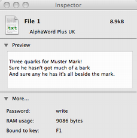
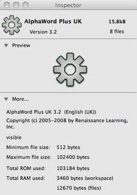

The file inspector shows more detail about a device, file or applet than is shown in the main window.
To open the inspector window, click the Info toolbar icon. The inspector will show information about the currently selected file.
|  |  |
Note that the 'preview' display may not always show content for an AlphaWord file unless the file has been copied recently.
Copyright © 2009-2013 tSoniq.